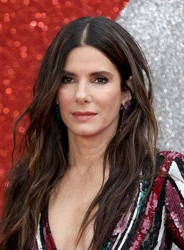
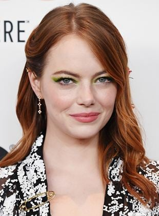

Emma Watson
Nascimento: 15/04/1990
Anos de carreira: 20 anos
Filmes lançados: 25

Jennifer Lawrence
Nascimento: 15/08/1990
Anos de carreira: 18 anos
Filmes lançados: 50
Scarlett Johansson
Nascimento: 22/11/1984
Anos de carreira: 30 anos
Filmes lançados: 81
Margot Robbie
Nascimento: 02/07/1990
Anos de carreira: 13 anos
Filmes lançados: 51
Sandra Bullock
Nascimento: 05/06/1964
Anos de carreira: 49 anos
Filmes lançados: 72
Angelina Jolie
Nascimento: 04/06/1975
Anos de carreira: 42 anos
Filmes lançados: 69

Anne Hathaway
Nascimento: 12/11/1982
Anos de carreira: 23 anos
Filmes lançados: 83

Gal Gadot
Nascimento: 30/04/1985
Anos de carreira: 15 anos
Filmes lançados: 35
Emma Stone
Nascimento: 06/11/1988
Anos de carreira: 19 anos
Filmes lançados: 44

Jennifer Aniston
Nascimento: 11/02/1969
Anos de carreira: 30 anos
Filmes lançados: 65